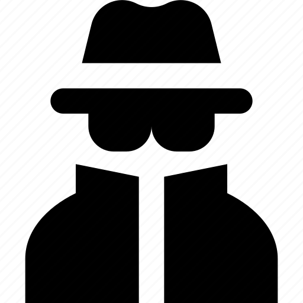
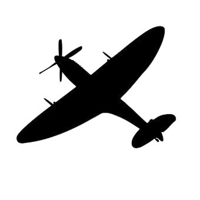
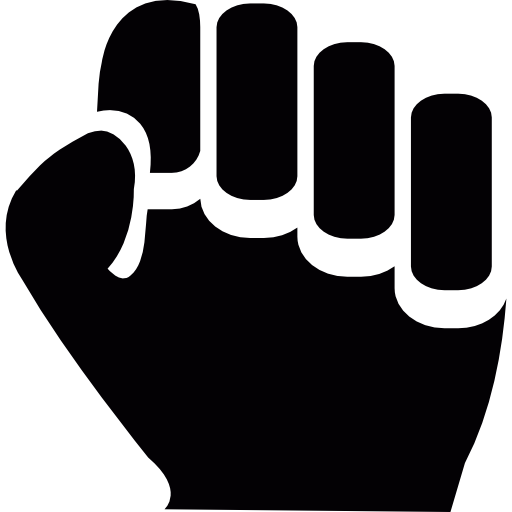

Characters
Micheal O'Shaunessy

Micheal is a tough young boy born into an irish spy family. His dad runs the irish embassy in germany, which allows a unique opportunity for him to help the allies by spying on germany from the inside. He does well in school, despite him resenting all the propoganda he is taught.
Micheal eventually befriends Fritz, who allows him to gain access to top secret plans the germans have of an experimental jet fighter that could change the war. One day, Micheal and his classmates are sent to find a downed british pilot who is of utmost importance. Micheal finds the pilot, named Simon, and takes him back to the Irish embassy.
Micheal eventually graduates his class, and joins the SRD; an elite hitler youth squad that has crucial information for the allies. Eventually Micheal works his way up the ranks of this group, being assigned to a special team along with Fritz.
Simon

Simon is a british pilot sent on a high altitude photography mission to spy on german infastructure. Unfortunately, he is shot down while flying over a german airfield, and crash lands on a farm not too far from the city.
Micheal finds him and hides him from the rest of his classmates, who have been sent to find and turn him in. Back at the embassy, Micheal's parents help Simon get back on his feet, and eventually Simon lets it slip that he is jewish.
Despite this, they continue to harbor and care for him. Simon teaches Micheal many things, making him into a better person, and a better spy. That is, until Micheal has to do something desperate to infiltrate the "science team."
Fritz

Fritz is a boy in Micheal's class. He is Micheal's best friend, and despite being shorter than everyone else he is very fierce and dedicated. Frtiz's dad works for the german government as an architect for a new experimental plane, codenamed Projekt 1065.
Fritz starts out acting rather timid, and during one of the book burnings he hesitates and the bigger kids beat him up for it. Later, Micheal teaches him how to fight and he gains a lot of confidence. He ends up joining the SRD, an elite division of the hitler youth, and becoming the top ranking member.
Fritz is slowly brainwashed by the nazi propoganda and becomes obsessed with serving his country, even going as far as reporting his parents to the gestapo. As such, he is selected for an elite team to assasinate a target of high value to the nazis.
Return to main page